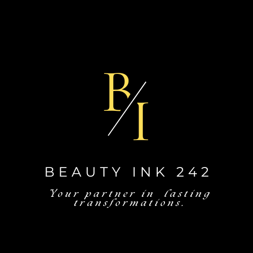
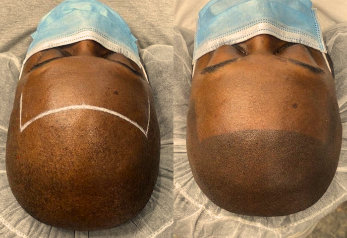
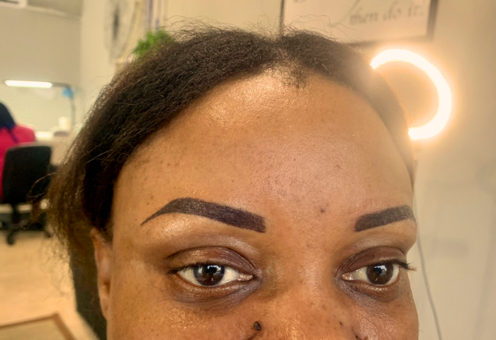
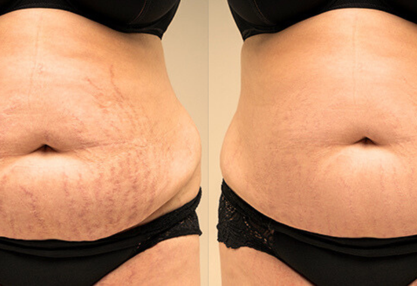
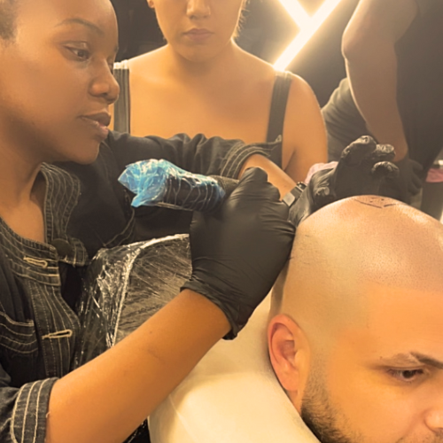
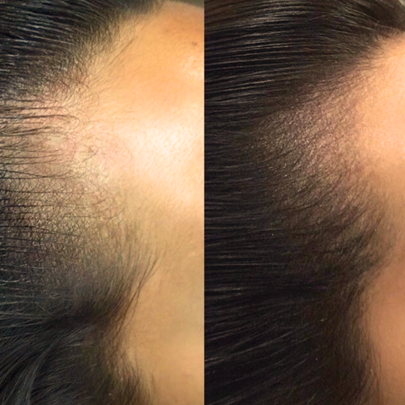
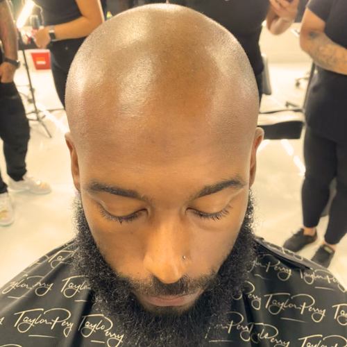

Specializing in Scalp Micropigmentation, Stretch-Mark Renewal, Areola Reconstruction, and Powder Brows.
Book A Free Consultation
At Beauty Ink 242, we’re more than a studio—we’re your partner in seamless, lasting transformations. With 8+ years perfecting permanent makeup and medical-grade pigment techniques, we restore what time and life have altered: hairlines, skin, and confidence. Every treatment is custom-mapped, comfort-first, and backed by our obsession for precision. No fluff. All results.
Our success is driven by innovation, operational excellence, and a strong commitment to our clients.
We’re proud to have the trust of 250 clients.
Percentage of clients who rave about their new look.
Years perfecting permanent makeup & restorative treatments.
Medical pros who trust us for complex reconstructions.
A cutting-edge solution for hair loss: tiny, pigment-matched dots recreate the look of natural follicles for immediate density—no surgery, zero downtime.

Soft-shaded, feather-light brows that last up to 3 years. A perfect balance of definition and subtlety, tailored to your bone structure and style.

Fade the past and smooth your skin’s future. Our medical-grade pigments blend into scar tissue to reduce contrast, restoring an even canvas.




“I never thought I’d look—and feel—this natural again. The team mapped my scalp perfectly, and friends keep asking if I grew new hair.”
“My confidence tanked after my stretch-mark surgery. Beauty Ink’s renewal treatment erased every line—now I actually love my skin in photos.”
“The detail on my areola reconstruction was beyond medical—it was artistry. I felt seen, understood, and healed."
Let’s remove the friction, restore what matters, and leave you free to live boldly.
Book Online